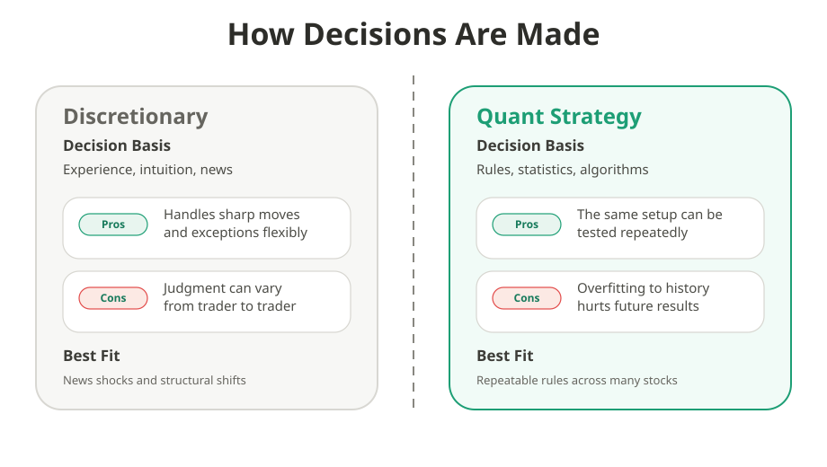
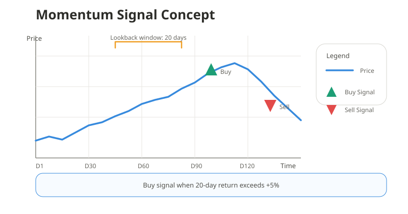
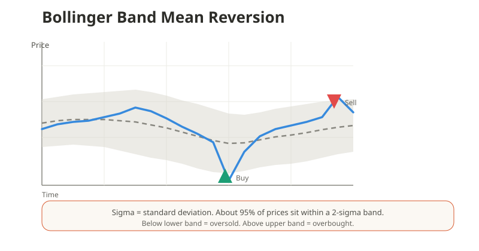
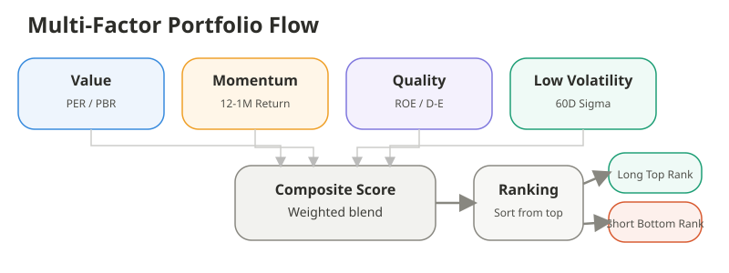
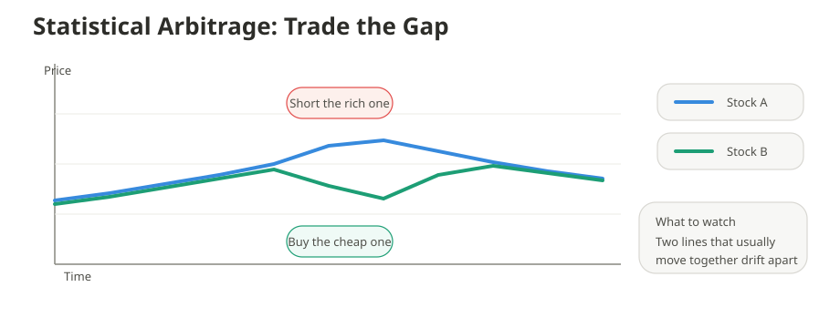
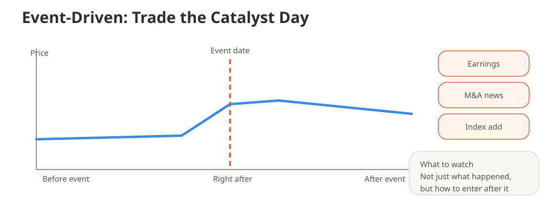
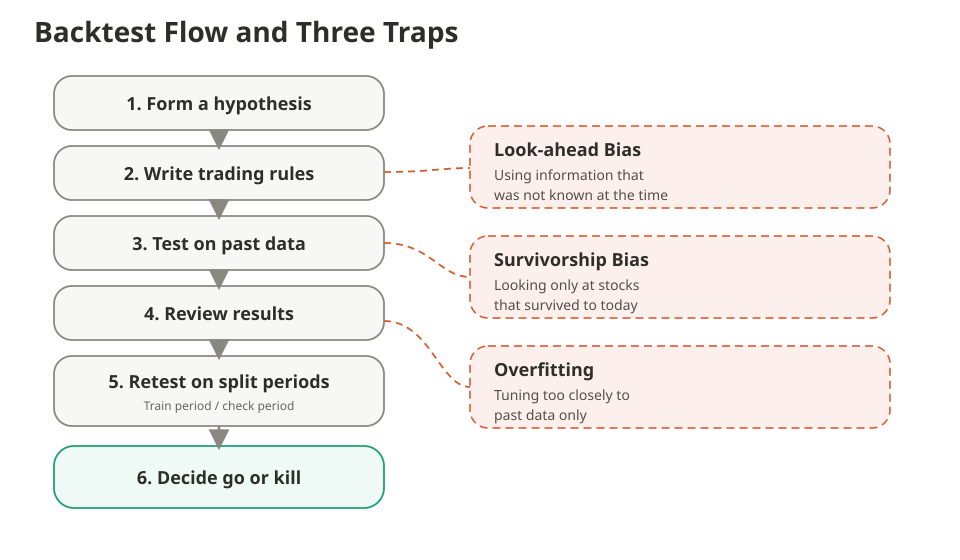
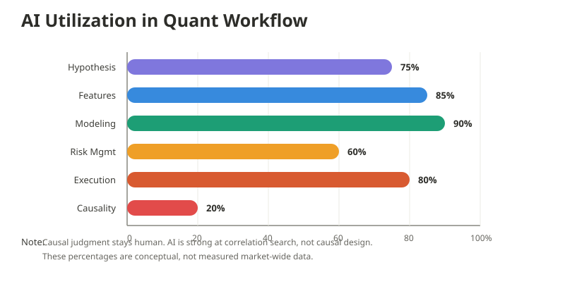
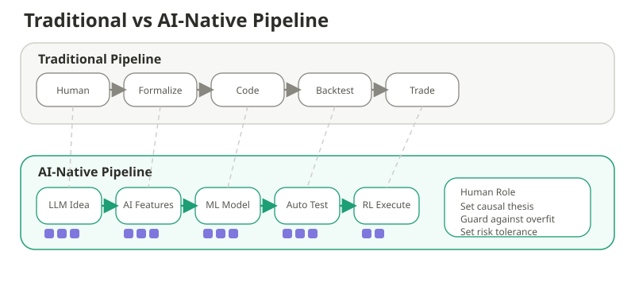
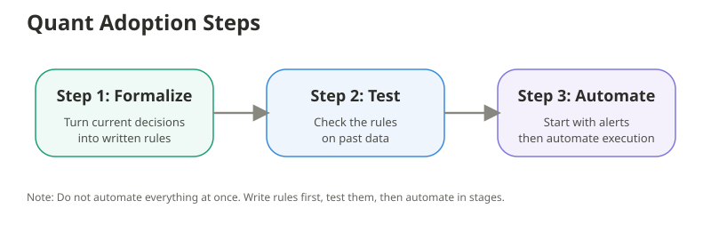

What Is a Quant Strategy? Five Strategy Types Retail Investors Should Understand and Where AI Is Changing the Workflow¶
For / Key Points
For: Retail investors who already invest in stocks and want a structured, beginner-friendly explanation of how quant strategies work
Key Points: - A quant strategy means deciding buy and sell rules in advance instead of relying on instinct - The five main strategy types target different market behaviors and fail in different conditions - AI is changing how fast ideas can be generated and tested, more than it is magically predicting markets
A quant strategy is a way of investing that starts with rules. Instead of saying "this stock looks strong," you define the conditions first. That makes the decision repeatable. It also makes it testable.
1. What Is a Quant Strategy? The Difference from Instinct-Based Trading¶
The easiest way to understand quant investing is to compare it with the opposite style. Here, discretionary trading means making decisions with experience, judgment, and interpretation. A quant strategy means making decisions with rules written in advance. That difference matters more than the asset itself.

For example, "earnings looked strong, so I bought" is a discretionary judgment. What counts as strong can change from person to person. A quant version would define the rule in numbers, such as revenue growth, earnings surprise, or trading volume. That is when a trade idea becomes something you can actually test.
This does not mean quant is always superior. Market conditions change. Rules that worked in the past can stop working later. And if a rule is tuned too closely to old data, it may fail in the real world.
2. The Five Core Strategy Types¶
Quant strategies do not all chase the same edge. Some follow trends. Some bet that prices will snap back. Some rank stocks by useful characteristics. Starting with a simple list makes the rest much easier to follow.
- Momentum: assets that have been rising may keep rising for a while
- Mean reversion: prices that moved too far may move back toward normal
- Factor investing: stocks are ranked by characteristics such as value or quality
- Statistical arbitrage: temporary price gaps between related assets are traded
- Event-driven: trades are built around earnings, mergers, index changes, or other catalysts
2.1 Momentum¶
Momentum starts from a simple idea. A stock that has been strong may stay strong for a while. In practice, investors rank securities by recent performance and focus on the strongest group. 1

The point is not to buy blindly after a price increase. The point is to define the condition in advance. A rule like "buy if the return over the last 20 days is above a threshold" is far more consistent than intuition. The weakness is sharp reversal risk.
2.2 Mean Reversion¶
Mean reversion starts from the opposite idea. If price moves too far away from its normal range, it may come back. This can apply to oversold stocks or to prices that move far above or below a moving average. Classic overreaction research found that extreme winners and losers often reverse later. 2

Bollinger Bands are a common way to visualize this. Think of them as a rough band for a normal price range. When price moves far outside that band, traders start asking whether the move has gone too far. 3 This works better in range-bound markets than in strong trends.
2.3 Factor Investing¶
Factor investing scores stocks by their characteristics. Examples include cheapness, recent strength, profitability, and lower volatility. The idea is to give each stock points and then allocate toward the higher-ranked group. The Fama-French three-factor model is one of the best-known references behind this way of thinking. 4
In practice, combining multiple factors is usually more stable than relying on only one. A single factor can stay weak for a long time. Using several factors together reduces dependence on one market regime. That is why multi-factor models are common.

Still, more inputs do not automatically make a model better. Adding too many signals can turn a clean model into a noisy one. The final design still depends on human judgment.
2.4 Statistical Arbitrage¶
Statistical arbitrage looks for temporary gaps between assets that usually move in similar ways. The classic example is pairs trading. If two related stocks suddenly drift apart, the expensive one may be sold while the cheap one is bought. 5

The attractive part is that you do not need to predict the whole market direction. The dangerous part is that the relationship itself can break. If two stocks only looked similar on the surface, the trade can fail badly.
2.5 Event-Driven¶
Event-driven strategies are built around specific catalysts. Examples include earnings releases, mergers and acquisitions, buybacks, and index inclusion events. When new information arrives, price can move quickly. The strategy is to define in advance how to react to that event. 6

For retail investors, the important part is not following more headlines. It is defining the event window, the entry rule, and the exit rule before the event happens. Without that structure, event-driven trading quickly turns back into pure discretion.
3. Backtesting: The Core of Quant and the Three Biggest Mistakes¶
Backtesting means trying a trading rule on past data. In quant investing, this is central. A good-looking idea is not enough. You need to know whether it held up when tested.

In the fifth step of the chart, the data is split into a period for developing the rule and a later period for checking it. That helps reveal rules that only worked because they were fit too closely to the past. It is not perfect. But it is far better than testing everything on one block of history.
There are three common mistakes. Look-ahead bias means using information that would not have been known at that time. Survivorship bias means looking only at the stocks that still exist today. Overfitting means building a rule that matches old data very closely but fails later.
Bailey and coauthors showed why this problem is structural. The more variations you test, the easier it is to confuse luck with skill. 7 That is why backtests must be treated as filters, not as proof that a strategy is permanently valid.
4. Quant Strategies and AI: What Is Really Changing¶
AI has not replaced quant investing. It has changed the workflow around it. Idea generation, transcript analysis, feature extraction, model comparison, and execution research can now move faster than before. BloombergGPT is one example of how finance-specific language models fit into that trend. 8

The percentages in the figure are not market-wide measurements. They are a simple way to show where AI tends to help most. AI is useful when large amounts of text or data need to be scanned quickly. OECD summaries already point to growing use in portfolio management, trading, and risk analysis. 9

The main shift is not that AI predicts markets for you. It is that AI can help generate more candidate ideas and test them faster. That is powerful. It also creates more false positives, so human judgment still matters.
5. How Retail Investors Can Use a Quant Mindset¶
The first step is not machine learning. It is rule definition. If you already make repeat decisions around earnings, valuation, or breakouts, write them as conditions instead of feelings. "Good earnings" is vague. "Revenue surprise plus margin strength plus volume confirmation" is testable.

After that, scale slowly. Define the rule first, test it on old data, automate alerts, and only later think about execution automation. That order makes it easier to separate a bad strategy from a bad implementation.
You also do not need exotic data to begin. Closing prices, moving averages, volume, and event dates are enough for a first version. The real edge is not a flashy model. It is the habit of writing repeatable rules and reviewing the results.
Summary¶
Quant strategy is not just a hedge-fund concept. It is a way to turn investing judgment into a repeatable process. AI lowers the barrier to research, but it does not remove the need for careful design. In practice, the advantage goes to people who can reject weak ideas quickly.
- Momentum follows strength, mean reversion fades extremes, factor investing scores stock characteristics, statistical arbitrage trades gaps, and event-driven strategies react to catalysts
- Backtests should be used to screen out weak ideas, not to declare a strategy permanently safe
- AI is most useful as a workflow accelerator for research and validation, not as a market oracle
Related Articles¶
- Risk and Return Basics — Turning “Scary” into Numbers
- Volatility Basics — Measuring How Violently Prices Move
- Why Chart Analysis Works — The Mechanism Behind Price Patterns
- Stock Investment Guide — Series Top
Narasimhan Jegadeesh and Sheridan Titman, Returns to Buying Winners and Selling Losers: Implications for Stock Market Efficiency, The Journal of Finance 48, no. 1 (1993). ↩
Werner F. M. De Bondt and Richard H. Thaler, Does the Stock Market Overreact?, The Journal of Finance 40, no. 3 (1985). ↩
NIST/SEMATECH, What do we mean by "Normal" data?, e-Handbook of Statistical Methods. ↩
Eugene F. Fama and Kenneth R. French, Common Risk Factors in the Returns on Stocks and Bonds, Journal of Financial Economics 33, no. 1 (1993). ↩
Evan Gatev, William N. Goetzmann, and K. Geert Rouwenhorst, Pairs Trading: Performance of a Relative-Value Arbitrage Rule, The Review of Financial Studies 19, no. 3 (2006). ↩
Malcolm Baker and Serkan Savasoglu, Limited Arbitrage in Mergers and Acquisitions, Journal of Financial Economics 64, no. 1 (2002). ↩
David H. Bailey, Jonathan Borwein, Marcos Lopez de Prado, and Qiji Jim Zhu, The Probability of Backtest Overfitting, Journal of Computational Finance (2015). ↩
Shijie Wu et al., BloombergGPT: A Large Language Model for Finance, arXiv:2303.17564 (2023). ↩
OECD, AI in finance, accessed April 15, 2026. ↩